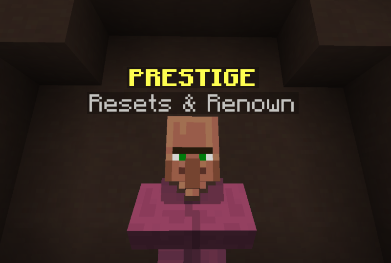

| The Pit 0.2 | |
| The Pit Update 0.2 - Prestige and Stats! | |
|  | |
| The Prestige NPC. | |
| Release Date | March 4th, 2018 |
|---|---|
| Forums Approval | 100.0% |
| Forums Author | Minikloon |
| ← Quick Patch Notes — Tiny post-update patch → | |
The Pit 0.2 was the second major version of the Hypixel Pit. It introduced prestiging, renown, stats, and other minor changes.
Prestiging was released to The Pit. Additionally, the maximum level was increased to 120 (previously 100) and the amount of XP needed to reach the maximum level was decreased to 65,950 XP (previously 1,000,000 XP). In order to prestige, players needed to have a certain amount of gold on their possession—different than the "gold grinded" system in place today.
Prestiging gave the player certain amounts of renown. As events and megastreaks did not exist, this was the only way to obtain renown. The maximum prestige a player could obtain was XXIII.
The renown shop was added with fifteen items.
Other changes: